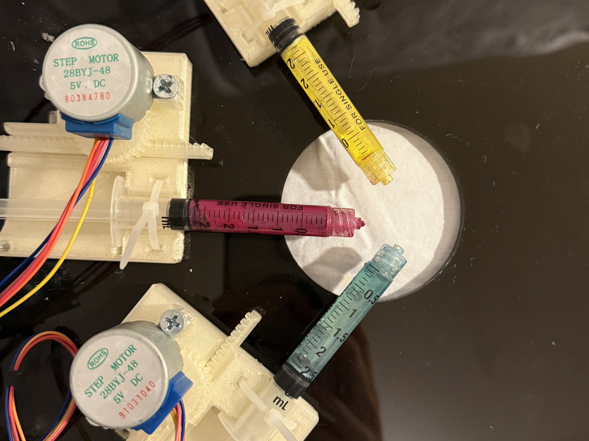
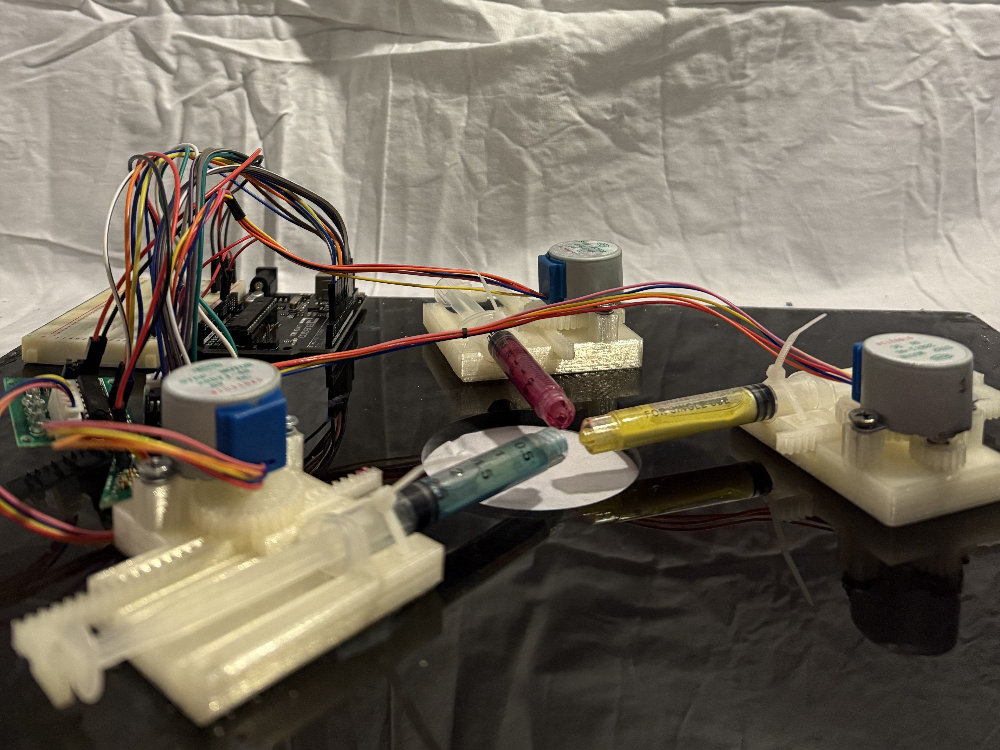
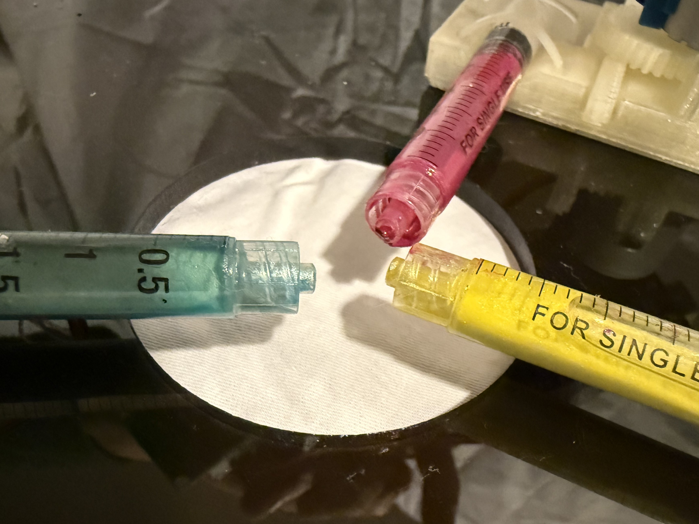
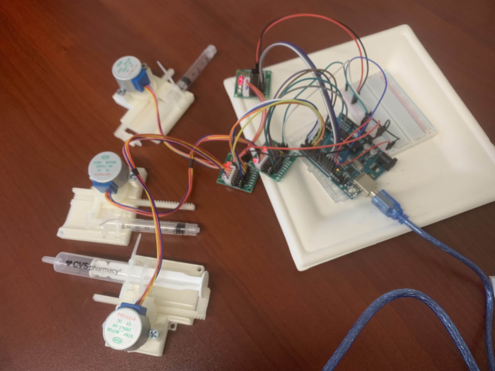
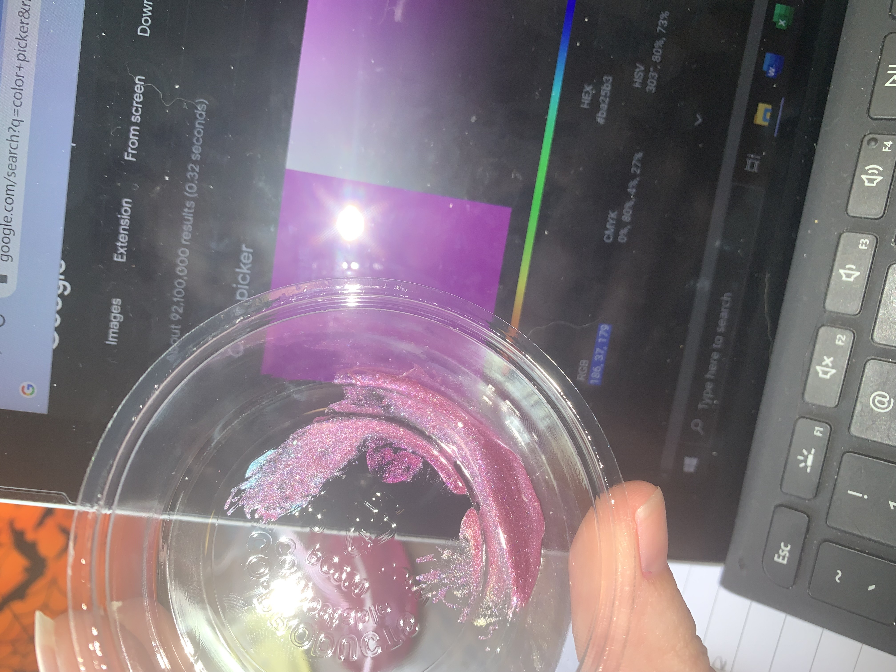

Final Prototype



Process
Fabrication and Testing




This was the first design engineering project I ever completed, just weeks after learning the basics of 3D CAD and printing. Though I did not yet have a developed design (or documentation) process, this project sparked my intrigue in design as a tool to compliment my technological work.